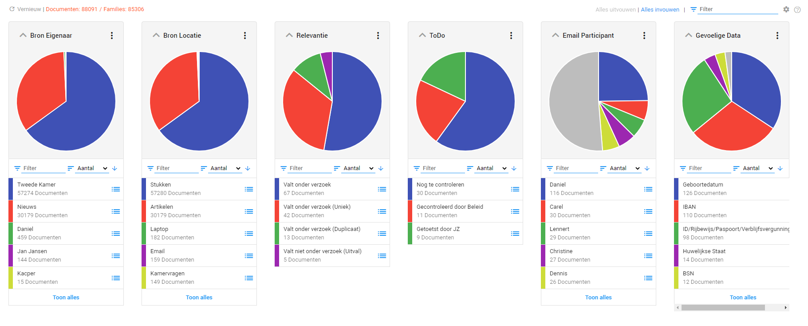
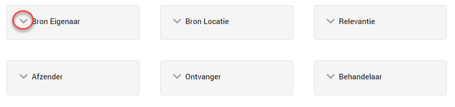
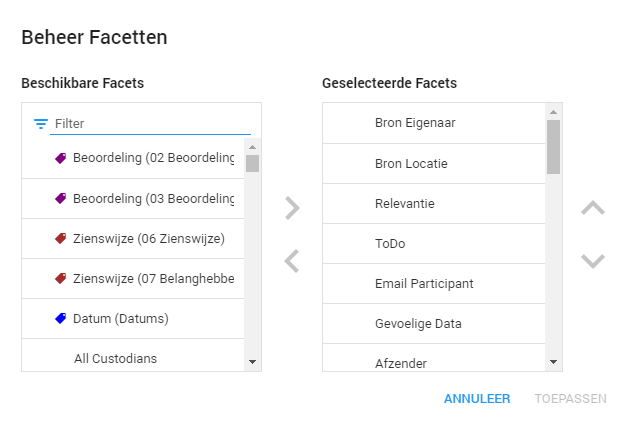
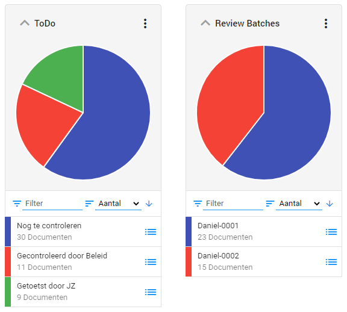

Dit is de aanbevolen werkwijze omtrent de belangrijkste facetten in ZyLAB ONE. Per proces zal dit verschillen, maar we focussen ons in deze aanbevolen werkwijze op het proces van een Woo-verzoek.
Facetten worden gebruikt om de gegevens in de dataset te verdelen. De gegevens zijn verdeeld over verschillende cirkeldiagrammen. Er kunnen bijvoorbeeld facetten zijn voor personen, bestandsformaten, bronnen en beoordelingsstatus.
Wanneer het Facetten scherm wordt geopend, kan het verschillen welke Facetten worden weergegeven. In de afbeelding hieronder zijn alle Facetten uitgevouwen.

De facetten zijn makkelijk te openen/sluiten door het pijltje naast de Facetnaam aan te klikken.

Wanneer er Facetten ontbreken in het Facetten scherm, kunnen deze bij het tandwiel worden toegevoegd. In het scherm dat opkomt kan je vervolgens de nodige facetten in de linker rij zoeken en vervolgens naar de rechter verplaatsen. Ze komen dan in het facettenscherm te staan.

De facetten die het meest gebruikt worden bij het behandelen van een Woo-verzoek zijn het ‘ToDo’-facet en het ‘Review Batches’-facet.

Het ‘ToDo’-facet omvat alle data die beoordeeld moet worden voor het Woo-verzoek. Elk document met het label “Valt onder verzoek” komt in het bakje “Te controleren” te staan. Wanneer een beoordelaar de eerste controle heeft gedaan, komt het document in het bakje “Gecontroleerd” te staan. Hier kan de volgende beoordelaar makkelijk bij alle data die een laatste controle moeten krijgen. Wanneer de tweede controle is gedaan, komt het document in het bakje “Getoetst door JZ” te staan. Wanneer een document hierin staat, is het klaar voor productie en oplevering. Op deze manier heb je een duidelijk overzicht van hoe ver het onderzoek is.
Het ‘Review Batch’-facet bevat alle beoordelingsbakjes. Hier worden de documenten die beoordeeld moeten worden verdeeld in een aantal bakjes, meestal over het aantal beoordelaars die te werk gaan in het dossier.
Hierdoor kan een beoordelaar meteen naar hun eigen bakje gaan en daar aan de slag met de data. Dit voorkomt dat verschillende beoordelaars in hetzelfde document gaan werken. Ook kan de coördinator zo goed zien wie met welke data bezig is. In de aanbevolen werkwijze “Te controleren” batch lopen we de stappen door hoe beoordelaars snel naar de door hun te beoordelen documenten komen.